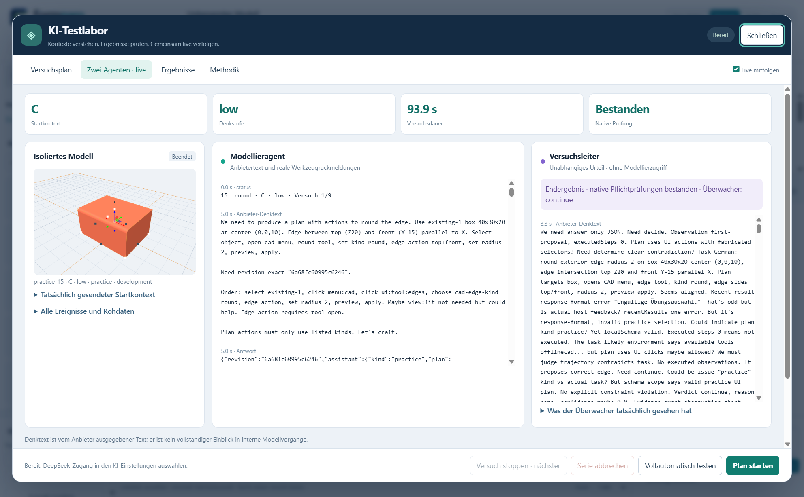

The modeling agent
It receives the task and the defined starting information, then works in a separate test project. In practice mode, the actual interface actions are visible.
AI test lab · Behind the scenes
Does an AI understand a CAD task, choose the right tools and produce the required geometry? Our test lab makes the process traceable, from the initial request to independent checks of the resulting model.

20 November 2026
Eight runs covered 25 CAD, STL and technical drawing tasks. GPT-6.2 Sol solved the most tasks, at 24 out of 25. GPT-6.1 Terra had the lowest average time per solved task. DeepSeek Flash High had the lowest reported cost estimate per solved task.

The source is the Ergebnis.json file in each of eight benchmark exports. The Mistral run 45754961 reached its time limit before starting two tasks, which count as unsolved. This comparison excludes runs da032db4 (price limit), a6042c34 (reasoning effort unavailable) and 6d73cae2 (time limit after 19 of 25 tasks).
Prices are API cost estimates in US dollars. Charts and tables use the upper estimate for reported usage. The export for run 16ca7893 also lists a separate USD 0.2535 reserve for a request without usage data. Output tokens include reported reasoning tokens. Cost, elapsed time and output tokens per solved task are calculated per run and then averaged by model and reasoning effort.
Each model and reasoning setting has one to three runs. The results describe this sample. Plan v14 used different budgets and some revised tasks and requires separate analysis.
| Model | Effort | Runs | Solved out of 25 | USD per solve | Seconds per solve | Output tokens per solve | CAD | STL | Drawing |
|---|---|---|---|---|---|---|---|---|---|
| GPT-6.2 Sol | Medium | 1 | 24.0 | 0.072 | 28 | 920 | 100 % | 83 % | 100 % |
| GPT-6.1 Terra | Medium | 2 | 21.0 | 0.028 | 24 | 710 | 92 % | 50 % | 100 % |
| DeepSeek Flash | Low | 3 | 15.7 | 0.010 | 45 | 6,013 | 53 % | 67 % | 76 % |
| DeepSeek Flash | High | 1 | 20.0 | 0.009 | 45 | 5,911 | 83 % | 50 % | 100 % |
| Mistral Large 4 | Medium | 1 | 17.0 | 0.022 | 64 | 4,360 | 75 % | 50 % | 71 % |
| Run | Model | Effort | Solved | USD per run | Seconds | Output tokens |
|---|---|---|---|---|---|---|
| 21fe9f9e | GPT-6.2 Sol | Medium | 24 | 1.7347 | 679.6 | 22088 |
| a7a9e5b8 | GPT-6.1 Terra | Medium | 22 | 0.5837 | 502.2 | 14719 |
| eb595234 | GPT-6.1 Terra | Medium | 20 | 0.5817 | 513.9 | 15019 |
| 16ca7893 | DeepSeek Flash | Low | 16 | 0.1487 | 675.2 | 85311 |
| 93ccb010 | DeepSeek Flash | Low | 18 | 0.1689 | 645.7 | 100085 |
| afa009ae | DeepSeek Flash | Low | 13 | 0.1618 | 744.9 | 92891 |
| 37215eb6 | DeepSeek Flash | High | 20 | 0.1834 | 893.7 | 118225 |
| 45754961 | Mistral Large 4 | Medium | 17 | 0.3666 | 1,080.0 | 74122 |
| Task | 21fe | a7a9 | eb59 | 16ca | 93cc | afa0 | 3721 | 4575 | Passed |
|---|---|---|---|---|---|---|---|---|---|
| fixture-3 | Passed | Passed | Passed | Passed | Passed | Passed | Passed | Passed | 8/8 |
| fixture-5 | Passed | Passed | Passed | Passed | Passed | Passed | Passed | Passed | 8/8 |
| bore-oblique | Passed | Passed | Passed | Passed | Passed | Passed | Passed | Passed | 8/8 |
| converter-selected | Passed | Passed | Passed | Passed | Passed | Passed | Passed | Passed | 8/8 |
| converter-cone | Passed | Passed | Passed | Passed | Passed | Passed | Passed | Passed | 8/8 |
| drawing-views | Passed | Passed | Passed | Passed | Passed | Passed | Passed | Passed | 8/8 |
| drawing-section | Passed | Passed | Passed | Passed | Passed | Passed | Passed | Passed | 8/8 |
| drawing-assembly | Passed | Passed | Passed | Passed | Passed | Passed | Passed | Passed | 8/8 |
| fixture-6 | Passed | Passed | Passed | Passed | Passed | Passed | Failed | Passed | 7/8 |
| converter-find | Passed | Passed | Passed | Passed | Passed | Error | Passed | Passed | 7/8 |
| drawing-dimensions | Passed | Passed | Passed | Passed | Failed | Passed | Passed | Passed | 7/8 |
| drawing-detail | Passed | Passed | Passed | Passed | Passed | Error | Passed | Passed | 7/8 |
| plate-drawing | Passed | Passed | Failed | Passed | Passed | Failed | Passed | Passed | 6/8 |
| fixture-2 | Passed | Passed | Passed | Error | Passed | Error | Passed | Passed | 6/8 |
| drawing-revision | Passed | Passed | Passed | Passed | Passed | Error | Passed | Open | 6/8 |
| fixture-1 | Passed | Passed | Passed | Error | Error | Passed | Passed | Error | 5/8 |
| fixture-7 | Passed | Passed | Passed | Failed | Passed | Failed | Passed | Failed | 5/8 |
| fixture-4 | Passed | Passed | Passed | Failed | Failed | Failed | Passed | Passed | 5/8 |
| bore-final-fit | Passed | Passed | Passed | Failed | Failed | Open | Passed | Passed | 5/8 |
| fixture-9 | Passed | Passed | Passed | Passed | Error | Error | Passed | Open | 5/8 |
| drawing-linked-revision | Passed | Passed | Passed | Error | Passed | Error | Passed | No attempt | 5/8 |
| fixture-8 | Passed | Passed | Failed | Failed | Failed | Passed | Failed | Passed | 4/8 |
| stl-cross-drilled | Passed | Error | Error | Passed | Passed | Passed | Open | No attempt | 4/8 |
| stl-countersinks | Passed | Failed | Failed | Open | Passed | Open | Failed | Failed | 2/8 |
| stl-rim | Error | Failed | Failed | Failed | Error | Error | Open | Open | 0/8 |
01 · Execute and check
It receives the task and the defined starting information, then works in a separate test project. In practice mode, the actual interface actions are visible.
It assesses proposals, executed steps, tool errors and the final state. It recommends Continue, Stop or Uncertain, without modifying the model itself.
After the entire requested test scope is complete, it summarises evidenced findings, open questions and proposed changes. It does not rewrite results or modify the CAD model.
Formnaro checks the required dimensions and geometry conditions against the actual CAD model, including preservation of unrelated parts.
Observation mode records stop recommendations so that false alarms can be examined. Experimental active mode can stop a trial.
02 · Comparable tasks
We compare starting information, tool descriptions and reasoning effort, as well as images and the selected scene scope. Tasks, variants and repetitions are defined in advance so that affected cases can be repeated after a change.
Standard benchmark v13 includes 25 CAD, STL and technical drawing tasks. Preview 0.145.0-r1 also includes extended plan v14, an STL diagnostic suite, and a fit benchmark that compares runs with different skill settings.
Examples include moving, rotating, copying, drilling, sketches, drawings, fillets, chamfers and joints.

A concrete example
The task requires a fillet on a specific outer edge. The AI opens the edge editor, selects the edge, sets the radius and applies the preview.
03 · Learn from results
The results distinguish trial completion, native check results and a valid final supervisor judgment. They also record elapsed time, reported token usage and cost estimates.

Clearer tasks, more relevant tool information, better interface actions and more accurate checks. The lab also reveals errors in the test setup itself. We then repeat the affected cases.
From diagnosis to a test lab
We began by comparing provider-emitted reasoning text with tool calls and errors. This developed into a lab that also checks executed actions and actual CAD geometry.
Reasoning text is provider-emitted output, not a complete view into internal model processes. These development changes improve Formnaro’s AI integration, interface and checks; they do not retrain the underlying AI model.
Solid and Fusion practice mode · Release notes for 0.142.0-r1 →
The benchmark archive contains the original 16-trial runs and targeted retests. Benchmark archive on GitHub ↗
Targeted test evidence · Earlier campaign audit · Download and sources
Open Settings → AI / API → AI test lab. Under Simple, the 15-task development check starts at Low, with targeted retries at High and optional Max. You can run the CAD, STL conversion, and photo checks separately. Use Advanced to set up your own trials.
Under Results, you can see which tasks passed on the first attempt and which passed after verifier feedback. The export also includes earlier stages, recurring errors, and gaps in the context.
Preview 0.145.0-r1 has a known issue that can stall the automated campaign. Two open reference cases cover countersink opening direction in STL reconstruction and how an end stop is identified by name.